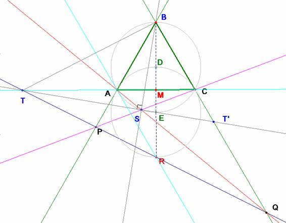

Problema
306.- Sea el triángulo equilátero ABC, por el punto R
simétrico de B con respecto a AC se traza una recta que corta a las
prolongaciones de BA y BC en P y Q respectivamente. Además si S es el punto de
corte de AQ y PC y T es el punto de corte de AC y PQ, demostrar que: SB= SA+SC
y <BST =90º.
Solución de Saturnino
Campo Ruiz, profesor del IES Fray Luis de León, de Salamanca

Para demostrar la propiedad relativa al punto S, definiremos una proyectividad entre
las rectas del haz de vértice A y las
del homólogo de vértice C de la
siguiente manera.
A
una recta r=AQ, la proyecto por R en el punto P sobre BC y después
desde C en la recta CP del haz de vértice C.
j: A*
à C*
j(AQ)=CP
Es evidente que la aplicación así definida es una
proyectividad y por tanto, los puntos de intersección de las parejas de rectas
homólogas describen una cónica.
Así pues, el punto S, al variar Q se
mueve por una cónica. En esta aplicación a la recta AC como elemento del
haz A* le corresponde la tangente a la cónica en C, y recíprocamente.
Dada AC, su imagen en esta homografía es la recta CR, paralela a AB
por C. La imagen de AB por j es la recta CB. En conclusión el punto B es un punto de
esta cónica y las tangentes en los vértices A y C son las rectas
paralelas a CB y AB respectivamente.
1.- El punto S
se mueve sobre la circunferencia circunscrita.
Ya sabemos que el triángulo ABC está
inscrito en ella.
De la definición de diámetros conjugados (rectas
que unen los puntos medios de las cuerdas paralelas) tenemos que A junto
con el punto medio de BC (la tangente en A es paralela a BC)
es un diámetro de la cónica: la altura desde A. Con el mismo razonamiento
la altura desde C también es un diámetro. La intersección de los
mismos, punto D, es el centro de la cónica.
Hemos obtenido tres puntos
de la cónica descrita por S, los del triángulo equilátero ABC así
como su centro. El triángulo simétrico respecto del centro de la cónica también
está en ella, y como estos puntos están en la circunferencia circunscrita, llegamos
a la conclusión deseada.
2.- SB = SA+SC
Ya lo hemos demostrado en problemas anteriores por
aplicación del teorema de Ptolomeo al cuadrilátero circunscrito ABCS. Se obtiene: SB·AC=SC·AB+SA·BC, dividiendo por el valor del lado del triángulo
resulta la expresión pedida.
Esa expresión es válida siempre que los puntos B y S
sean vértices opuestos del cuadrilátero inscrito.
3.-
<BST =90º.
Para probar que BT
y ST son perpendiculares
probaremos que el punto E, extremo
del diámetro desde B en la
circunferencia circunscrita está alineado con S y T. Nos basaremos en
la invariancia proyectiva de la razón doble de cuatro puntos alineados y en una
propiedad de un cuadrivértice, que ya usamos en el problema nº 168 y en el 200d
(La cónica de los nueve puntos), y es
que los lados que pasan por un punto
diagonal están armónicamente separados por las rectas que lo unen con los otros
puntos diagonales. En la situación actual tenemos el cuadrivértice definido
por los puntos A, C, P y Q. Los puntos diagonales del mismo son B, S y T. La propiedad anterior nos dice que las rectas TC y TQ
están separadas armónicamente por las rectas TB, TS, o bien, cortando con BC,
que la cuaterna (CQBT’) es armónica.
Si se proyecta desde T sobre el
diámetro BR se obtendrá otra cuaterna
armónica. En ese diámetro podemos comprobar fácilmente que (MRBE) es armónica, pues, tomando el
radio como unidad de medida se tiene:
(MRBE) == -1.
En
la proyección de (CQBT’) sobre el
diámetro los tres primeros puntos se corresponden con los de la cuaterna
anterior, debido a la unicidad del cuarto armónico, el cuarto punto ha de corresponderse
con E. Con ello queda (CQBT’)=
(MRBE) y los puntos E, S y T están alineados como pretendíamos. c.q.d.